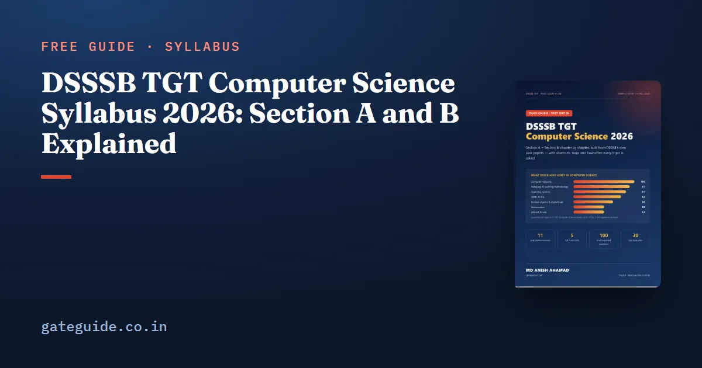

DSSSB TGT Computer Science Syllabus 2026: Section A and B Explained

The DSSSB TGT Computer Science syllabus has two parts: a common Section A of five general subjects, and a Section B of Computer Science that includes teaching methodology. This guide sets out both, explains which official topics DSSSB actually asks, and shows how to share your time between them.
In this guide
- Key takeaways
- The words you will meet
- Section A: the common general section
- Section B: the official 32 headings
- What DSSSB actually asks from that list
- How to divide your time
- Teaching methodology inside Section B
- How to use the official syllabus as a checklist
- If DSSSB publishes a new syllabus
- Quick revision
Key takeaways
- Section A (100 questions) is the same for every TGT post: General Awareness, Reasoning, Arithmetic, Hindi and English, 20 questions each.
- Section B (100 questions) is Computer Science "including questions on teaching methodology".
- No separate 41/26 syllabus was published by 13 October 2026; the official 56/24 syllabus for the same department is the best guide.
- That syllabus lists 32 headings, including accounting, economics, physics basics and .NET — which is why some questions feel off-syllabus.
- Past papers concentrate on networks, operating systems, DBMS, digital logic, web technology and teaching methodology.
The words you will meet
- Indicative syllabus — DSSSB's own word for its subject syllabus: a guide to the scope, not a promise of every question.
- Section B — the subject section. Qualifying marks apply here and to the total.
- Teaching methodology — pedagogy questions (child development, assessment, methods), about 10 per paper.
Section A: the common general section
| Sub-section | Questions | What it covers |
|---|---|---|
| General Awareness | 20 | history, polity, economy, geography, science, sports, current affairs, Delhi GK |
| General Intelligence & Reasoning | 20 | series, coding, analogy, odd one out, ranking, syllogism, non-verbal |
| Arithmetical & Numerical Ability | 20 | percentage, profit and loss, interest, time and work, speed, mensuration |
| Hindi Language & Comprehension | 20 | संधि, समास, पर्यायवाची, विलोम, मुहावरे, वाक्य शुद्धि, अपठित गद्यांश |
| English Language & Comprehension | 20 | comprehension, fill-ups, error spotting, idioms, synonyms, para jumbles |
Remember: there is no minimum score in Section A, but every mark there counts in the total, and the total must also cross the qualifying line. Our Section A strategy shows how to collect 55–65 marks there.
Section B: the official 32 headings
The 56/24 syllabus lists these headings, grouped here so they are easier to plan:
| Group | Official headings |
|---|---|
| Core CS | Computer basics and PC software; Fundamentals of IT; Computer architecture; Digital electronics; Operating systems; Linux environment |
| Programming | Programming with C; Data structures using C; C++; Object-oriented programming; Java and website design; .NET programming; Problem solving and programming |
| Data and networks | Database management system; Computer networks; TCP/protocols; Computer network security; Mobile computing |
| Web | Front-end design tools; Internet programming (web server, CSS, event model, XML DTDs) |
| Theory and maths | Mathematics I–IV; Design and analysis of algorithms; Numerical techniques; Interpolation; Statistical techniques |
| Applied | Software engineering; Computer graphics and multimedia; E-commerce; Management information system; Knowledge management |
| Commerce and science | Business communication; Business organisation and management; Financial accounting; Business economics; Basic physics; Foundation course in English |
What DSSSB actually asks from that list
A syllabus this wide cannot be studied evenly in six weeks. The past papers show where the marks are. Counting 1,100 Computer Science questions from 11 TGT Computer Science papers (2017, 2021, 2023 and 2024):
| Topic | Questions in 11 papers | Per paper |
|---|---|---|
| Computer networks | 106 | 9.6 |
| Teaching methodology | 97 | 8.8 |
| Operating systems | 91 | 8.3 |
| DBMS and SQL | 83 | 7.5 |
| Boolean algebra and digital logic | 69 | 6.3 |
| Mathematics | 53 | 4.8 |
| Internet and web | 53 | 4.8 |
| Software engineering | 44 | 4.0 |
| Commerce, physics and other non-core | 148 | 13.5 |
The full breakdown, including the smaller topics, is in our previous year papers analysis.
Trap: students often skip the commerce and physics headings as "not computer science". They are in the official syllabus, and together they gave about 13 questions per paper. Learn their most repeated facts in a day — do not ignore them, and do not over-invest either.
How to divide your time
| Share of study time | Topics |
|---|---|
| 45% | Networks, operating systems, DBMS/SQL, digital logic and number systems |
| 20% | Programming (C, C++, Java, Python output questions), data structures, web |
| 10% | Teaching methodology |
| 10% | Maths, software engineering, graphics, security |
| 5% | Commerce, physics, .NET facts |
| 10% | Section A daily practice |
Our list of the most important topics goes one level deeper — the exact concepts that repeat inside each topic.
Teaching methodology inside Section B
The advertisement says Section B includes "questions on teaching methodology/B.Ed.", and every paper since 2023 shows how much: the last 10 questions of Section B. They draw on Piaget and Vygotsky, assessment, teaching methods and schemes such as SSA, RTE and NEP 2020. For a B.Sc or BCA graduate with no B.Ed. these look unfamiliar, but they are short facts that repeat, and ten marks is a lot to give away.
How to use the official syllabus as a checklist
A syllabus is most useful as a tick-list, not as a reading list. Print the 32 headings and, for each one, mark three things as you go:
- Asked in past papers? If yes, how often — the counts above tell you.
- Studied once? The first full pass, with notes.
- Revised? A second pass from your own short notes or a one-page sheet.
Headings that past papers never touched — for example, mobile computing has appeared only a few times — can stay at "studied once". Headings that give eight or nine questions per paper deserve three revisions. This keeps your attention where the marks are without ignoring any official topic.
Remember: "indicative" means DSSSB may ask outside the list, as the off-syllabus questions show. The checklist protects the 85–90% of marks that are predictable; the rest is handled by broad reading, not by panic.
Keep the official PDF itself saved as well, so you can check any heading's exact wording when a question seems unusual.
If DSSSB publishes a new syllabus
If a separate syllabus for 41/26 appears before the exam, compare it heading by heading with the 56/24 list above. New headings are worth a quick read; removed headings can be dropped from revision. The heavy topics — networks, operating systems, DBMS, digital logic — are in every Computer Science syllabus and will not disappear.
Quick revision
- Section A: five general subjects, 20 questions each, common to all TGT posts.
- Section B: 100 Computer Science questions including about 10 on teaching methodology.
- The official 56/24 syllabus (32 headings) is the best guide for 41/26.
- Networks, teaching methodology, OS, DBMS and digital logic give the most questions.
- Commerce, physics and .NET appear too — learn the repeated facts quickly.
Frequently asked questions
Has DSSSB released a separate syllabus for Post Code 41/26?
As of 13 October 2026 no separate subject syllabus for Post Code 41/26 was visible on the DSSSB website. The most recent official TGT Computer Science syllabus for the Directorate of Education is the one published for Post Code 56/24, the same department and qualification rules, so it is the best guide to what 41/26 will cover.
Is the Section A syllabus the same for all TGT subjects?
Yes. Section A is common to every TGT post - General Awareness, Reasoning, Arithmetic, Hindi and English, 20 questions each. That is why papers of TGT Maths, Science or Hindi are useful practice for the Section A part of TGT Computer Science.
Why does the DSSSB TGT CS syllabus include accounting and economics?
The official 56/24 syllabus lists Business Communication, Financial Accounting, Business Economics, Management Information System, Basic Physics and .NET programming among its 32 headings. Past papers do ask a few such questions, roughly 13 per cent of Section B, so learn their most-repeated facts but do not spend weeks on them.
How many teaching methodology questions come in Section B?
Since 2023 every TGT Computer Science paper has ended with a block of 10 teaching-methodology questions inside Section B, covering child development, assessment, teaching methods and education schemes. The 2021 papers also had about 10. They are among the easiest marks in the paper if you revise them.
Sources
- DSSSB official website
- Indicative syllabus, Post Code 56/24, TGT (Computer Science) in DoE (official PDF)
- DSSSB vacancies and advertisements (Advt. 03/2026)
Dates, vacancies and the syllabus are set by DSSSB and can change. Always confirm at dsssb.delhi.gov.in. GATE Guide is not affiliated with DSSSB.